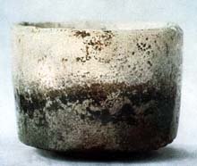
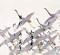

| Raku
Teabowl 'Fujisan'
made by Hon'ami Koetsu
Fujisan,
or 'Mount Fuji', by Hon'ami Koetsu (1558-1637), is one of Japan's
most revered Tea bowls. The name derives from the white glaze, which
appears to sit on the bowl like snow on Mount Fuji, Japan's most
tallest and respected mountain. It is said that Koetsu softened
the contrast between the black and white glazes with 'Yohen', the
technique of varying the heat intensity and atmosphere of the wood-fired
kiln. Many reproductions of this bowl have been attempted over the
years, but none are said to have ever matched the beauty and dignity
of the original Fujisan.
Koetsu
came from a family of sword sharpeners, a group belonging to high
ranking commoners. He studied under under Raku II (Jokei) and Raku
III (Donyu). He was a potter, lacquer artist and calligrapher. His
pottery consisted almost entirely of tea bowls made for the tea
ceremony. Koetsu is said to have made Fujisan around 1600.
Related Links:
QuickTimeVR
of Black Raku tea bowl 'Shichiri'
More Articles
More Pots of the
Week
|